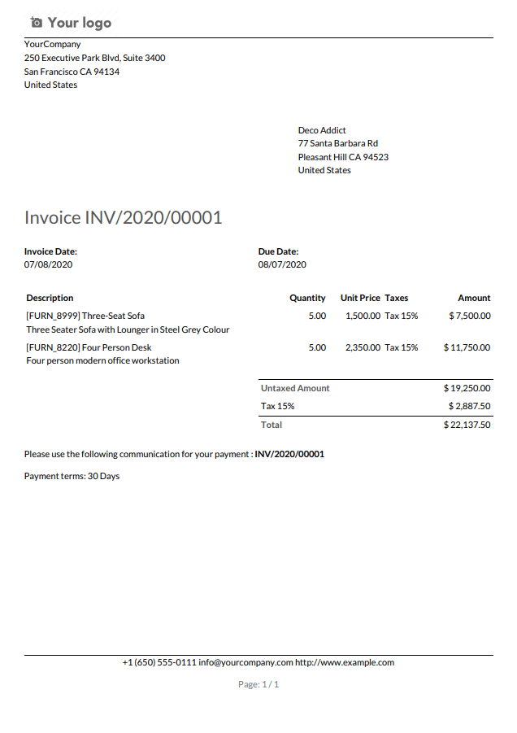
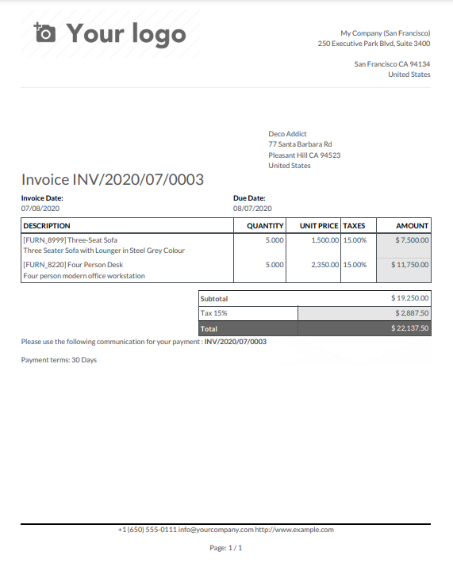
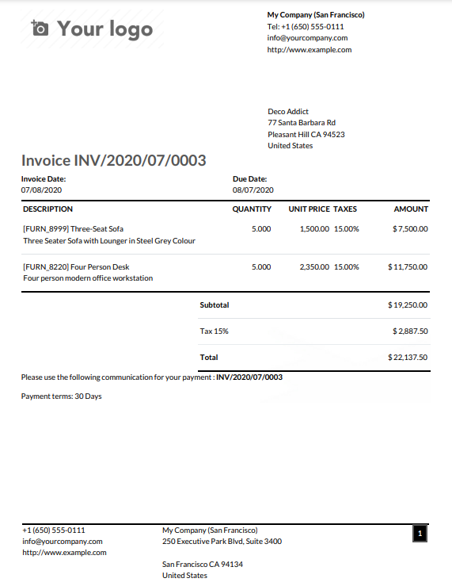
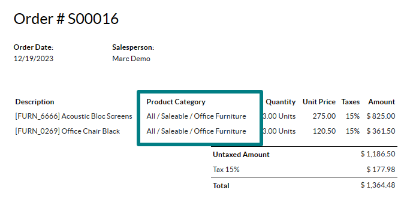
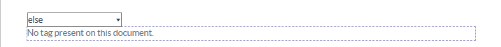

รายงาน PDF¶
ด้วยสตูดิโอคุณสามารถ: ref: แก้ไขรายงาน PDF ที่มีอยู่ <Studio/PDF-รายงาน/แก้ไข> `(เช่นใบแจ้งหนี้ใบเสนอราคา ฯลฯ ) หรือ: ref: สร้างใหม่<Studio/PDF-Reports/Edit> `
เค้าโครงเริ่มต้น¶
เค้าโครงเริ่มต้นของรายงานได้รับการจัดการนอกสตูดิโอ : การเลือกเมนู: การตั้งค่า 'ในส่วน: guilabel: บริษัท ' คลิก: Guilabel: `กำหนดค่าเค้าโครงเอกสาร ' แต่นำไปใช้กับรายงานทั้งหมด
Tip
คุณสามารถดูว่าการตั้งค่าที่แตกต่างมีผลต่อเค้าโครงรายงานในไฟล์รายงานตัวอย่างทางด้านขวาหรือดาวน์โหลดตัวอย่างใบแจ้งหนี้ PDF โดยคลิก: Guilabel: ดาวน์โหลด PDF Preview
ใช้การตั้งค่าต่อไปนี้:
: Guilabel:
layout: มีเลย์เอาต์สี่รูปแบบ:
: Guilabel:
font: มีแบบอักษรเจ็ดแบบ: Lato, Roboto, Open Sans,Montserrat, Oswald, Raleway และ Tajawal (ซึ่งสนับสนุนภาษาอาหรับและละตินสคริปต์) ดูตัวอย่าง
: guilabel:
โลโก้ บริษัท ': คลิกปุ่ม: guilabel:แก้ไข' เพื่ออัปโหลดหรือเปลี่ยนโลโก้ โมเดลซึ่งคุณสามารถเข้าถึงได้โดยไปที่: การเลือกเมนู:การตั้งค่า 'แล้วการคลิก: Guilabel: `Update Infoใน: Guilabel:` บริษัท '
: Guilabel:
colors: เปลี่ยนสีหลักและรองที่ใช้รายงานโครงสร้าง สีของโลโก้
: Guilabel:
layout background: มีพื้นหลังต่อไปนี้:: Guilabel:
blank: ไม่มีอะไรปรากฏขึ้น: Guilabel:
geometric: ภาพที่มีรูปทรงเรขาคณิตจะปรากฏขึ้นในพื้นหลัง: Guilabel:
Custom: อัปโหลดภาพพื้นหลังที่กำหนดเอง
: Guilabel:
บริษัท สโลแกน ': นี่แสดงในส่วนหัวของ: REF: `รายงานภายนอก <Studio/PDF-Reports/Header-footer/external>เพิ่มข้อความหลายบรรทัด
: Guilabel:
รายละเอียด บริษัท ': สิ่งเหล่านี้แสดงในส่วนหัวของ: REF: `รายงานภายนอก <Studio/PDF-Reports/Header-footer/external>เพิ่มข้อความหลายบรรทัด
: Guilabel:
รูปแบบกระดาษ ': เพื่อกำหนดขนาดกระดาษเริ่มต้นของรายงาน สามารถเลือก: Guilabel: `A4(21 ซม. x 29.7 ซม.) ,: guilabel:` us letter` (21.59 ซม.x 27.54 ซม.) หรือ: guilabel:หน้ารหัส QR ' รายงานส่วนบุคคลใน: guilabel: `ฟิลด์รูปแบบกระดาษ 'ใน: ref:สตูดิโอ<สตูดิโอ/PDF- รายงาน/สร้าง> `
การสร้างรายงาน PDF ใหม่¶
หากต้องการสร้างรายงานใหม่สำหรับโมเดลให้เข้าถึงโมเดลให้คลิกสลับ **ปุ่มสตูดิโอ ** จากนั้นคลิก: Guilabel: `รายงาน ' ในหน้าต่างป๊อปอัปที่เปิดให้เลือกประเภทของรายงาน ใช้เพื่อกำหนดสิ่งที่แสดงในส่วนหัวและส่วนท้าย:
เมื่อคุณสร้างรายงานแล้วคุณสามารถเริ่มต้น: REF: `แก้ไขมัน<Studio/PDF-Reports/Edit> `
การแก้ไขรายงาน PDF¶
หากต้องการเข้าถึงรายงานที่มีอยู่สำหรับรุ่นให้เข้าถึงรุ่น (เช่นการขายคำสั่งซื้อ) คลิกปุ่มสตูดิโอสลับ **** จากนั้นคลิก: Guilabel: `รายงาน 'เลือกรายงานที่มีอยู่เพื่อเปิดหรือ: ref: `สร้างใหม่ <Studio/PDF-รายงาน/สร้าง> `
Tip
อีกทางเลือกหนึ่งคุณสามารถเปิดสตูดิโอคลิก: Guilabel: `รายงาน 'และค้นหารายงานหรือรูปแบบเฉพาะ
Important
ขอแนะนำอย่างยิ่งให้ทำซ้ำ ** รายงานมาตรฐานและดำเนินการการเปลี่ยนแปลงในเวอร์ชันที่ซ้ำกัน ตัวชี้ที่มุมบนขวาของรายงานคลิกที่จุดไข่ปลาแนวตั้งไอคอน (: Guilabel: ⋮) จากนั้นเลือก: Guilabel: duplicate
ตัวเลือก¶
เมื่อคุณเลือกหรือสร้างรายงานแล้วคุณสามารถใช้ตัวเลือกในไฟล์ส่วนซ้ายของหน้าจอเป็น:
เปลี่ยน: Guilabel:
Name Report ' สตูดิโอภายใต้ปุ่ม: Guilabel: `printและในชื่อไฟล์ PDF)แก้ไข:: guilabel: `รูปแบบกระดาษ ' กำหนดไว้ใน: ref: `เค้าโครงเริ่มต้น <Studio/PDF-Reports/Default-Layout/Paper> `ใช้
: guilabel:
show in menu: เพื่อเพิ่มรายงานใน: guilabel: `print 'เมนูพร้อมใช้งานจากบันทึก: Guilabel:
โหลดใหม่จากไฟล์แนบ: เพื่อบันทึกรายงานเป็นไฟล์แนบบนบันทึกเป็นครั้งแรกที่มันถูกสร้างขึ้นและโหลดเวอร์ชันดั้งเดิมของรายงานเวลาใด ๆ ที่ตามมา ส่วนใหญ่จะใช้ในกรณีนี้: Guilabel:
จำกัด การมองเห็นกลุ่ม ': เพื่อ จำกัด ความพร้อมใช้งานของ PDFรายงานเฉพาะ: doc: `กลุ่มผู้ใช้ <../ ทั่วไป/ผู้ใช้/access_rights>: guilabel:
แก้ไขแหล่งที่มา ': เพื่อแก้ไขรายงานโดยตรงใน: ref:xmlไฟล์ <Studio/PDF-Reports/XML-editing> `: Guilabel:
Reset Report: เพื่อยกเลิกการเปลี่ยนแปลงทั้งหมดที่เกิดขึ้นกับรายงานและรีเซ็ตเป็นเวอร์ชันมาตรฐาน: Guilabel:
Print Preview: เพื่อสร้างและดาวน์โหลดตัวอย่างรายงาน
รายงานบรรณาธิการ¶
ตัวแก้ไขรายงานช่วยให้คุณสามารถแก้ไขการจัดรูปแบบและเนื้อหาของไฟล์รายงาน.
Tip
คุณสามารถ: guilabel:
undoหรือ: guilabel:` redo` การเปลี่ยนแปลงโดยใช้สิ่งที่เกี่ยวข้องปุ่มหรือทางลัดctrl zและ` ctrl y`การเปลี่ยนแปลงจะถูกบันทึกโดยอัตโนมัติเมื่อคุณออกจากรายงานหรือใช้ด้วยตนเองปุ่ม: Guilabel:
saveคุณสามารถรีเซ็ตรายงานเป็นเวอร์ชันมาตรฐานได้โดยคลิกที่: Guilabel: `Reset Report 'ปุ่ม' ในส่วนซ้ายของหน้าจอ
Important
การแก้ไขส่วนหัวและส่วนท้ายของรายงานส่งผลกระทบต่อมาตรฐานและกำหนดเองทั้งหมดรายงาน
บล็อกเงื่อนไข¶
รูปสี่เหลี่ยมผืนผ้าประแสดง ** บล็อกเงื่อนไข ** (*ถ้า/อื่น*ข้อความ) เงื่อนไข.

เลือกค่าเพื่อดูตัวอย่างผลลัพธ์ที่สอดคล้องกันและแก้ไขหากจำเป็น

Note
เงื่อนไขสามารถแก้ไขได้ใน: ref: `xml <Studio/PDF-Reports/XML-การแก้ไข> `
เนื้อหาอื่น ๆ¶
มีเนื้อหาข้อความสองประเภทในรายงาน:
ข้อความคงที่เช่นข้อความที่ไม่ได้เน้นด้วยสีน้ำเงินซึ่งสามารถทำได้แก้ไขโดยตรงในตัวแก้ไข
ข้อความแบบไดนามิกเช่นข้อความที่เน้นเป็นสีน้ำเงินซึ่งถูกแทนที่ตามค่าฟิลด์เมื่อมีการสร้างรายงานเช่นจำนวน SO หรือไฟล์วันที่ใบเสนอราคา
คุณสามารถเพิ่มเนื้อหา (เช่นฟิลด์, รายการ, ตาราง, รูปภาพ, แบนเนอร์ ฯลฯ )รายงานการใช้คำสั่ง <ความรู้/powerbox> `จากนั้นพิมพ์ชื่อคำสั่งหรือเลือกจากไฟล์รายการ.
หากต้องการเพิ่มข้อความแบบคงที่ลงในรายงานให้พิมพ์ข้อความที่คุณต้องการ
สำหรับการเปลี่ยนแปลงขั้นสูงเพิ่มเติมคุณสามารถ: ref: `แก้ไขรายงานใน XML โดยตรง<Studio/PDF-Reports/XML-editing> `
เพิ่มฟิลด์¶
หากต้องการเพิ่มฟิลด์ให้พิมพ์ / และเลือกคำสั่ง: guilabel: ฟิลด์ ' รายการที่เปิด, เลือกหรือค้นหาฟิลด์; ไปยังชื่อฟิลด์เพื่อเข้าถึงรายการฟิลด์ที่เกี่ยวข้องหากจำเป็น ระบุค่าเริ่มต้นและกด `Enter
เพิ่มตารางข้อมูล¶
ตารางข้อมูลใช้เพื่อแสดง: ref: ฟิลด์เชิงสัมพันธ์<Studio/Fields/Relational-Fields> ` คำสั่ง: guilabel: `dynamic Table และเลือกความสัมพันธ์เป็นแสดงในตาราง
Note
ความสัมพันธ์เฉพาะประเภท one2many หรือ` many2many` สามารถแสดงเป็นข้อมูลได้ตาราง
เมื่อเพิ่มตารางแล้วคุณสามารถเพิ่มคอลัมน์โดยใช้เครื่องมือตารางจัดตำแหน่งเคอร์เซอร์ที่ด้านบนของคอลัมน์จากนั้นคลิกสี่เหลี่ยมสีม่วงและเลือกตัวเลือก

จากนั้นคุณสามารถแทรก: ref: `ฟิลด์ที่คุณเลือก <Studio/PDF-Reports/Add-ฟิลด์> `ในคอลัมน์ สำหรับฟิลด์ (เช่นโมเดลแท็ก *) และรายการฟิลด์ที่มีอยู่

Note
แถวเริ่มต้นวนซ้ำโดยอัตโนมัติผ่านเนื้อหาของฟิลด์สร้างขึ้นแถวในรายงานสำหรับแต่ละค่าฟิลด์ (เช่นหนึ่งแถวต่อแท็ก) เพิ่มแถวเนื้อหาคงที่ด้านบนหรือต่ำกว่าแถวที่สร้างขึ้นโดยใช้ตารางเครื่องมือ
นอกจากนี้คุณยังสามารถเพิ่มตารางข้อมูลโดย: ref: `การแก้ไข XML ของรายงาน<Studio/PDF-Reports/XML-editing> `
การจัดรูปแบบ¶
หากต้องการจัดรูปแบบข้อความในรายงานเลือกจากนั้นจัดรูปแบบโดยใช้ตัวเลือกในThe: ref: `ความรู้/บรรณาธิการข้อความ '

การแก้ไข XML ของรายงาน¶
Warning
การแก้ไข XML โดยตรงอาจส่งผลให้เกิดปัญหารายงานระหว่าง: DOC: `การอัพเกรด<../../../ การดูแลระบบ/อัพเกรด> ` การเปลี่ยนแปลงจากฐานข้อมูลเก่าเป็นฐานข้อมูลที่อัพเกรดของคุณ
หากต้องการแก้ไข XML ของรายงานคลิก: Guilabel: `แก้ไขแหล่งที่มาในบานหน้าต่างด้านซ้าย
ตัวอย่าง¶
บางครั้งตารางไม่ได้รับการยอมรับอย่างเหมาะสมเนื่องจากซับซ้อนโครงสร้าง XML ใน XML (ง่ายขึ้นเพื่อวัตถุประสงค์ในการจัดทำเอกสาร):
<!-- table root element --> <table> <!-- thead = table header, the row with column titles --> <thead> <!-- table row element --> <tr> <!-- table header element --> <th>Name</th> <th>Price</th> </tr> </thead> <!-- table body, the main content --> <tbody> <!-- we create a row for each subrecord with t-foreach --> <tr t-foreach="record.some_relation_ids" t-as="line"> <!-- for each line, we output the name and price as table cells --> <td t-out="line.name"/> <td t-out="line.price"/> </tr> </tbody> </table>ในการแก้ไขตารางคุณต้องตรวจสอบให้แน่ใจว่าแต่ละแถวมีจำนวนข้อมูลเท่ากันเซลล์. ส่วน (เช่นชื่อคอลัมน์) และอีกอันหนึ่งในส่วนของร่างกายด้วยเนื้อหาของฟิลด์ (โดยปกติจะมีคำสั่ง
t-outหรือ` t-field`)<table> <!-- table root element --> <thead> <!-- thead = table header, the row with column titles --> <tr> <!-- table row element --> <th>Name</th> <!-- table header element --> <th>Price</th> <th>Category</th> </tr> </thead> <tbody> <!-- table body, the main content --> <tr t-foreach="record.some_relation_ids" t-as="line"> <!-- we create a row for each subrecord with t-foreach --> <td t-out="line.name"/> <!-- for each line, we output the name and price as table cells --> <td t-out="line.price"/> <td t-out="line.category_id.display_name"/> </tr> </tbody> </table>Note
เซลล์สามารถขยายหลายแถวหรือคอลัมน์ `เว็บไซต์เครือข่ายนักพัฒนา Mozilla <https://developer.mozilla.org/en-US/DOCS/Learn/HTML/Tables/Basics> `_
ตัวอย่างเช่นคุณสามารถแก้ไข ** ใบเสนอราคา/คำสั่งซื้อ ** รายงานเพื่อเพิ่มคอลัมน์เพื่อแสดงหมวดหมู่ผลิตภัณฑ์ในตารางหลัก:
<table class="table table-sm o_main_table table-borderless mt-4"> <!-- In case we want to repeat the header, remove "display: table-row-group" --> <thead style="display: table-row-group"> <tr> <th name="th_description" class="text-start">Description</th> <th>Product Category</th> <th name="th_quantity" class="text-end">Quantity</th> <th name="th_priceunit" class="text-end">Unit Price</th> [...] <tr t-att-class="'bg-200 fw-bold o_line_section' if line.display_type == 'line_section' else 'fst-italic o_line_note' if line.display_type == 'line_note' else ''"> <t t-if="not line.display_type"> <td name="td_name"><span t-field="line.name">Bacon Burger</span></td> <td t-out="line.product_id.categ_id.display_name"/> <td name="td_quantity" class="text-end"> <span t-field="line.product_uom_qty">3</span> <span t-field="line.product_uom">units</span> <span t-if="line.product_packaging_id">
ในการเพิ่มตารางใน XML คุณต้องรู้ชื่อของฟิลด์และวัตถุคุณต้องการเข้าถึงและแสดงผล รายละเอียดแท็กในใบสั่งขาย:
<!-- table root element -->
<table class="table">
<!-- thead = table header, the row with column titles -->
<thead>
<!-- table row element -->
<tr>
<!-- table header element -->
<th>ID</th>
<th>Name</th>
</tr>
</thead>
<!-- table body, the main content -->
<tbody>
<!-- we create a row for each subrecord with t-foreach -->
<tr t-foreach="doc.tag_ids" t-as="tag">
<!-- for each line, we output the name and price as table cells -->
<td t-out="tag.id"/>
<td t-out="tag.name"/>
</tr>
</tbody>
</table>
Note
เมื่อเพิ่มตารางด้วยตนเองให้สไตล์โดยใช้คลาส bootstrap<https://getbootstrap.com/docs/5.1/content/tables> _ เช่นคลาส ตาราง 'รวมอยู่ในตัวอย่างด้านบน
หากคุณต้องการแสดง/ซ่อนเนื้อหาตามเงื่อนไขเฉพาะคุณสามารถทำได้เพิ่มคำสั่งควบคุม if/else ด้วยตนเองในรายงาน XML
ตัวอย่างเช่นหากคุณต้องการซ่อนตารางข้อมูลที่กำหนดเองหากไม่มีแท็กคุณสามารถใช้แอตทริบิวต์ t-if เพื่อกำหนดเงื่อนไขซึ่งก็คือแล้วประเมินว่า true หรือ` false ' ไม่มีแท็กในใบเสนอราคา
<!-- table root element -->
<table class="table" t-if="len(doc.tag_ids) > 0">
<!-- thead = table header, the row with column titles -->
<thead>
<!-- table row element -->
<tr>
<!-- table header element -->
<th>ID</th>
<th>Name</th>
</tr>
</thead>
<!-- table body, the main content -->
<tbody>
<!-- we create a row for each subrecord with t-foreach -->
<tr t-foreach="doc.tag_ids" t-as="tag">
<!-- for each line, we output the name and price as table cells -->
<td t-out="tag.id"/>
<td t-out="tag.name"/>
</tr>
</tbody>
</table>
หากคุณต้องการแสดงบล็อกอื่นในกรณีที่คำสั่ง t-if คือประเมินเป็น false 'คุณสามารถระบุได้โดยใช้คำสั่ง t-else` บล็อก t-else จะต้องติดตามบล็อก` t-if` ในเอกสารโดยตรงโครงสร้าง. คุณลักษณะ. ไม่มีแท็กในใบเสนอราคา:
<!-- table root element -->
<table class="table" t-if="len(doc.tag_ids) > 0">
<!-- thead = table header, the row with column titles -->
<thead>
<!-- table row element -->
<tr>
<!-- table header element -->
<th>ID</th>
<th>Name</th>
</tr>
</thead>
<!-- table body, the main content -->
<tbody>
<!-- we create a row for each subrecord with t-foreach -->
<tr t-foreach="doc.tag_ids" t-as="tag">
<!-- for each line, we output the name and price as table cells -->
<td t-out="tag.id"/>
<td t-out="tag.name"/>
</tr>
</tbody>
</table>
<div class="text-muted" t-else="">No tag present on this document.</div>
โดยใช้สัญลักษณ์ t-if/t-else ตัวแก้ไขรายงานตระหนักว่าสิ่งเหล่านี้ส่วนต่าง ๆ ร่วมกันและควรแสดงเป็นเงื่อนไขบล็อก:
คุณสามารถสลับเงื่อนไขโดยใช้ตัวแก้ไขเพื่อดูตัวอย่างผลลัพธ์ของพวกเขา:
หากคุณต้องการมีหลายตัวเลือกคุณสามารถใช้คำสั่ง `t-elif`เพื่อเพิ่มเงื่อนไขตัวกลาง รายงานการสั่งซื้อการเปลี่ยนแปลงตามเงื่อนไขของเอกสารพื้นฐาน
<h2 class="mt-4">
<span t-if="env.context.get('proforma', False) or is_pro_forma">Pro-Forma Invoice # </span>
<span t-elif="doc.state in ['draft','sent']">Quotation # </span>
<span t-else="">Order # </span>
<span t-field="doc.name">SO0000</span>
</h2>
ใบแจ้งหนี้ * pro-forma * ถูกใช้ขึ้นอยู่กับบริบทบางอย่างเงื่อนไข. ไม่ว่าจะเป็น draft หรือ` ส่ง 'จากนั้นใช้ใบเสนอราคา ** ตามเงื่อนไขชื่อของรายงานคือ *คำสั่งซื้อ *
การทำงานกับรูปภาพในรายงานอาจเป็นเรื่องที่ท้าทายขนาดและพฤติกรรมของภาพไม่ชัดเจนเสมอไป การใช้ตัวแก้ไขรายงาน (: ref: โดยใช้คำสั่ง /ฟิลด์ <Studio /PDF-รายงาน/add-field> `) แต่แทรกลงใน XML โดยใช้ t-field 'คำสั่งและการประกอบแอตทริบิวต์ t-options ให้ขนาดที่ดีขึ้นและการควบคุมตำแหน่ง
ตัวอย่างเช่นรหัสต่อไปนี้ส่งออกฟิลด์ image_128 ของบรรทัดผลิตภัณฑ์เป็นภาพกว้าง 64px (ด้วยความสูงอัตโนมัติตามภาพอัตราส่วนภาพ)
<span t-field="line.product_id.image_128" t-options-widget="image" t-options-width="64px"/>
ตัวเลือกต่อไปนี้พร้อมใช้งานสำหรับวิดเจ็ตภาพ:
ความกว้าง ': ความกว้างของภาพมักจะอยู่ในพิกเซลหรือหน่วยความยาว CSS (เช่น`rem) (ว่างเปล่าสำหรับความกว้างอัตโนมัติ)ความสูง ': ความสูงของภาพมักจะอยู่ในพิกเซลหรือหน่วยความยาว CSS (เช่น`rem) (ว่างเปล่าสำหรับความสูงอัตโนมัติ)class: คลาส CSS ใช้กับแท็ก` img`; <https://getbootstrap.com/docs/5.1/content/tables> `_ พร้อมใช้งานalt: ข้อความทางเลือกของภาพstyle: คุณลักษณะสไตล์; ด้วยคลาส bootstrap<https://getbootstrap.com/docs/5.1/content/tables> `_
แอตทริบิวต์เหล่านี้จะต้องมีสตริงเช่นข้อความที่แนบมาภายในคำพูดภายในคำพูดเช่น `t-options--------------Width = `(หรืออีกทางเลือกหนึ่งการแสดงออกของงูหลามที่ถูกต้อง)
Note
ไม่สามารถใช้วิดเจ็ตภาพบนแท็ก img คำสั่งเกี่ยวกับ span (สำหรับเนื้อหาอินไลน์) หรือ` div` (สำหรับเนื้อหาบล็อก)โหนด
ตัวอย่างเช่นลองเพิ่มคอลัมน์ด้วยภาพผลิตภัณฑ์ในใบเสนอราคาโต๊ะ:
<table class="table table-sm o_main_table table-borderless mt-4">
<thead style="display: table-row-group">
<tr>
<th>Image</th>
<th name="th_description" class="text-start">Description</th>
<th>Product Category</th>
<th name="th_quantity" class="text-end">Quantity</th>
<th name="th_priceunit" class="text-end">Unit Price</th>
[...]
<t t-foreach="lines_to_report" t-as="line">
<t t-set="current_subtotal" t-value="current_subtotal + line.price_subtotal"/>
<tr t-att-class="'bg-200 fw-bold o_line_section' if line.display_type == 'line_section' else 'fst-italic o_line_note' if line.display_type == 'line_note' else ''">
<t t-if="not line.display_type">
<td>
<span t-field="line.product_template_id.image_128"
t-options-widget="'image'"
t-options-width="'64px'"
t-options-class="'rounded-3 shadow img-thumbnail'"
/>
</td>
<td name="td_name"><span t-field="line.name">Bacon Burger</span></td>
<td t-out="line.product_id.categ_id.display_name"/>
แอตทริบิวต์ t-options 'คลาส bootstrap ที่ใช้ใน `t-options-class สร้างรูปขนาดย่อเหมือนชายแดนที่มีมุมโค้งมนและเงา